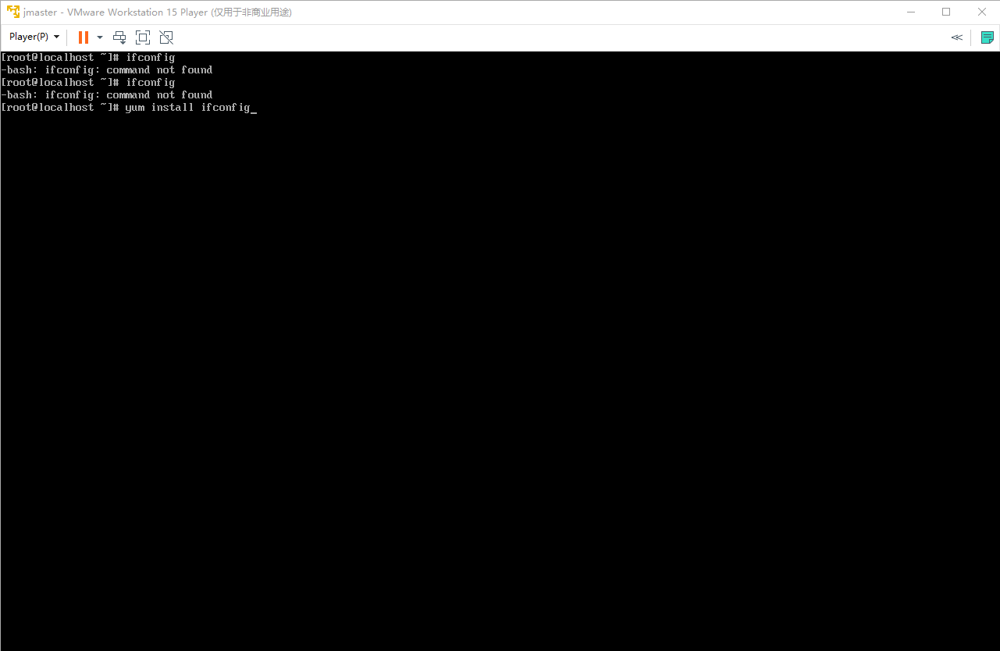
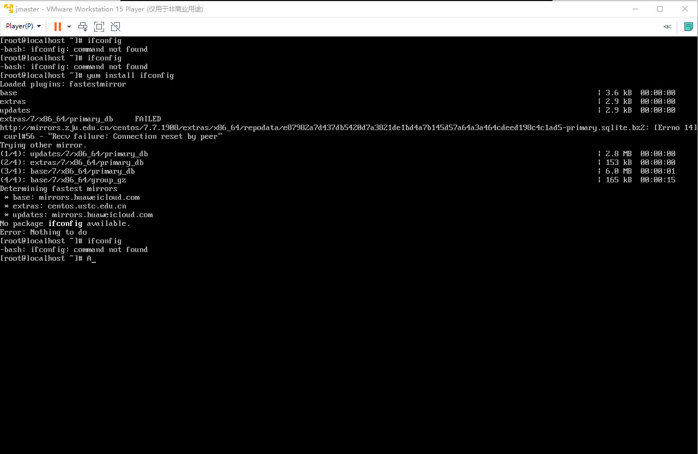
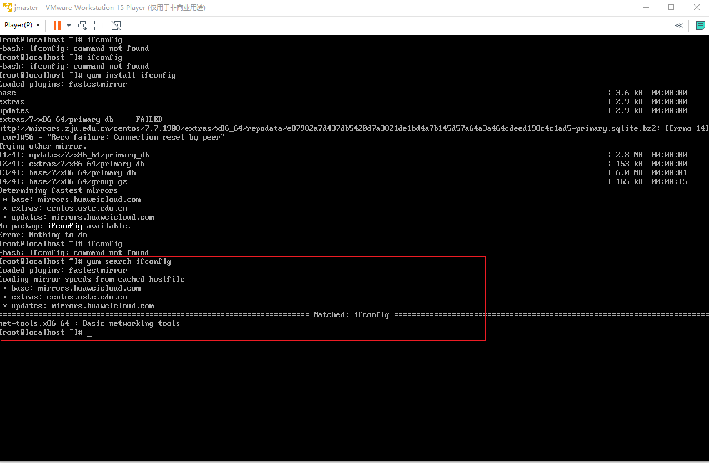
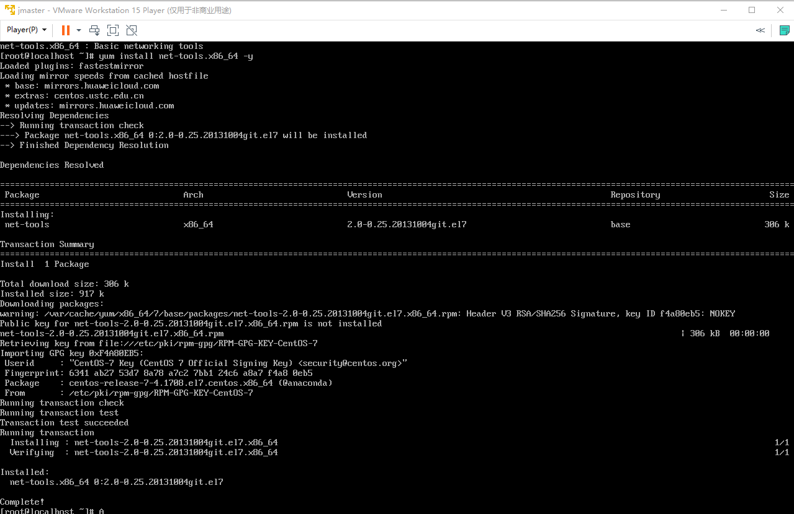
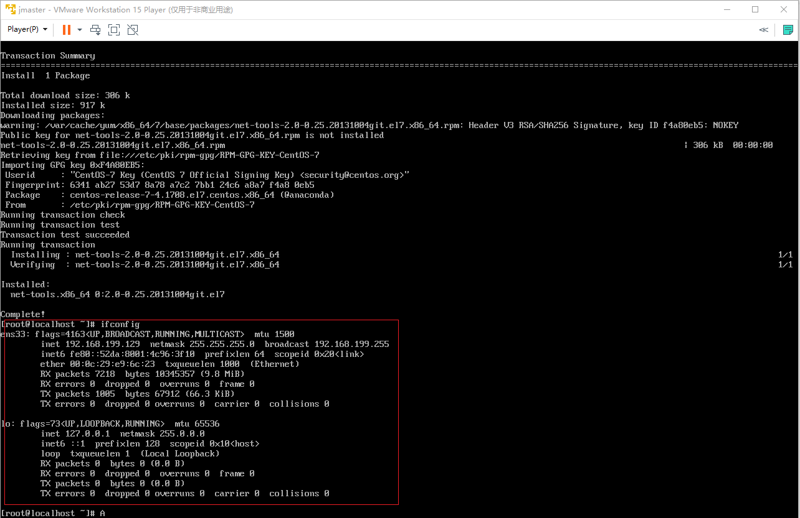
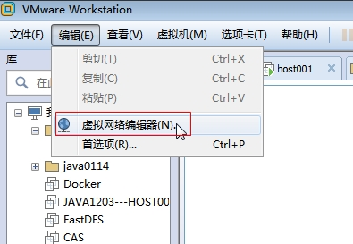
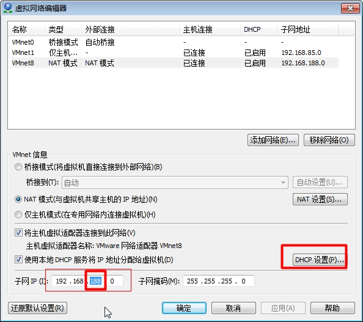
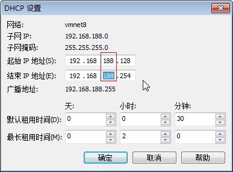
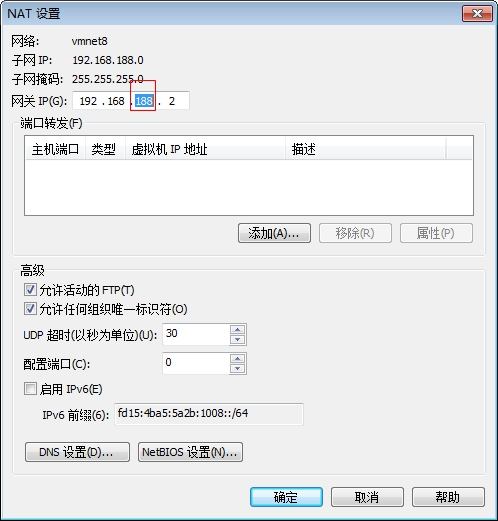

一，Linux相关基础配置
1.1 安装ifconfig
安装好的系统，在vm中直接进行ifconfig会提示找不到命令，原因是我们安装的mini版的centos系统，缺少很多依赖，所以需要手动安装，一般情况选择使用yum指令进行安装。提示信息和安装记录如下：
第一步，执行ifconfig 查看网卡失败，找不到命令
第二步，使用yum install ifconfig 安装

第三步，使用yum install ifconfig 安装失败、提示没有找到ifconfig包

第四步，使用yum search ifconfig 查看支持包信息

第五步，使用指令 yum install net-tools.x86_64 -y 进行支持包安装

第六步，验证安装结果，输入ifconfig指令
能够查看到网卡信息，说明已经安装成功

1.2 配置静态网址
每次启动虚拟机IP地址都有可能发生变化，为了方便程序直接调用，所以需要将地址设置为静态，也就是固定IP地址
操作细则如下：




1.2.1 操作系统命令行修改静态ip
第一步，执行命令
vi /etc/sysconfig/network-scripts/ifcfg-ens33第二步，按一次键盘的i进入编辑模式
第三步，将ONBOOT=no 修改为 ONBOOT=yes
第四步，重启网卡，执行命令
systemctl restart network